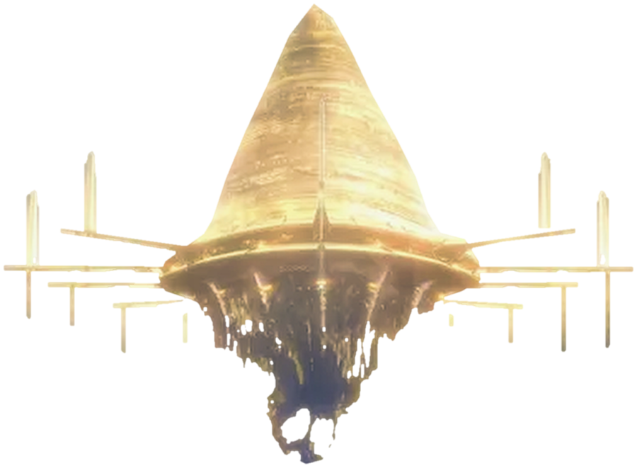
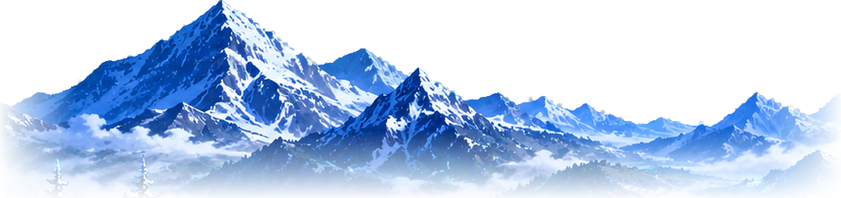
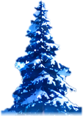
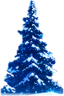
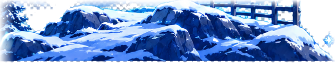
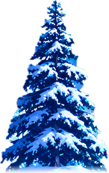
XMAS- // SERVER STABLE
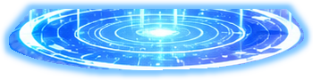
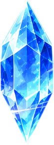
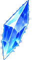
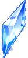
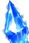
Toca el cristal
A special memory has arrived.
EVENT ID · XMAS- // STATUS · UNLOCKED
MEMORY RESTORED · XMAS-
MEMORY RESTORED
RECOVERING FRAGMENT 1 / 3
Esta experiencia necesita JavaScript activado para funcionar.